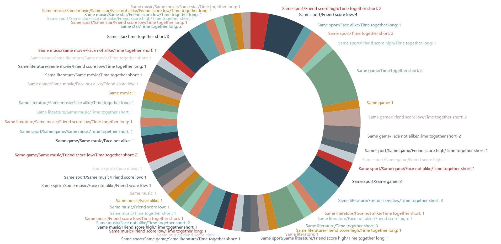

Introduction
Our question started simple. Being high school students, we examined the the community around us and realized there are students that desire having better social relationships but are struggling to achieve so. We are also afraid that at some point in our future we will be struggling on the same problem.
...And we realized how meaningful our question is after doing some research. We found that high school is an important period for social identity and mental development. In China, peer pressure often causes social problems among students.
Therefore, we decided our topic: we aim to help high school students who are weak in social skills but eager to establish connections get rid of loneliness and integrate into schools and student groups. In order to explain the status and position of similar high school students in different schools, we linked to a biological concept: ecological niche. Ecological niche is defined with the position (both chronologically and spacially) of the tribe in the ecological system as well as its relationship with other groups. Interestingly, we found that groups distributed in different geographical places can act as similar functional groups when their ecological niche is similar. We realized that different schools can be considered as different "geographical places", and students who have similar behaviors can be defined as having the same social niche.
In general, social niche is a person's socializing position in the community. If we regard interpersonal relationships as a network and every person as a node, the value of social niche is the flow rate in the node. Based on this definition of social niche and our research, we assembled a logic line based on past experiments, surveys, and data:
Personal Traits Behavioral Patterns Social Niche
Problems in socializing appear in all phases in life, for example, the relationship network in workplaces. If previewed and practiced how to improve social niche, we can adapt ourselves in future environments. According the definition of social niche, we assume that sharing similar or opposite traits with high social niche people or most people helps to construct relationship, thus improving the social niche. Therefore, we designed and analyzed a survey to find those "traits". The conclusion:
- The longer leisure time students are willing to spend with their friends, the more friends they will have.
- The similarity in academic achievement and physical appearance have limited influence on friendship.
- Common hobbies, especially sports and music preferences, are instrumental in establishing friendships.
Righthand Chart: Scatter chart of self score percentage vs. friend score percentage.
More details: see Academic Paper below.
Since we have found that most personal characteristics were not instrumental to friendship, we cannot give suggestions on how to choose a social subject for themselves directly. Therefore, we decided to help them improve social niche by training their behavioral patterns in a simulation designed based on related books and real situations.
By combining the advantages of video games and social skill training programs, we made an "interactive video" and uploaded it on bilibili.com, where users can choose different options leading to different results. Users are expected to help a transfer student make decisions under various social scenes to adapt to the new life in school. Besides, we also published articles on our official account for popularizing.Until now, the video was played 835 times, and about 3000 people read our articles. Users have commented that although the game is difficult, they are willing to do trials and errors to find the right choice.
Click here to watch the interactive video.
Project Overview Video
Materials
Reflection
This is literally the first time for me to participate in a social science project. Here I will briefly discuss what I learned in this project, as well as how would I improve in the future.
One thing we did well is that we took the idea of "ecological niche", realized the similarity between groups in ecological systems and students in schools, and defined specifically the meaning of "social niche", building our further thoughts on top of that opinion. Then, from our research, we successfully derived the cause-and-effect chain of our question.
After that, we started to design our survey, listing out characteristics needed for a working "personal portrait". We eventually came to the conclusion that personal traits cannot be directly changed, as well as social subjects suggestions would not work. Instead, we went on to the next interdependency: behavioral patterns. We referred to a book called Works Well with Others (which talks about the ways of letting you seem skillful in a working environment) and made the interactive video.
Things that we can still improve is that we didn't sent out surveys to those who played our game, and see if this helps them or not. However, the feedback that we received from them is that many scenes are very real, and they are willing to do trials and errors to get to the "hidden ending" in our interactive video. We also examined the change over time experiments through our research on our way of designing the video.
As for myself, I was the data analyst, main programmer and researcher in the group. Not only do I practiced my skills in coding, data science and visualization, I also linked this project with algorithms and mathematics. We once tried to construct a qualitative mathematic graph model that can simulate the whole community, but we ended up only using graph concepts to design the social niche. I also programmed the logic tree for our interactive video. I also became more familiar with research on social science parts, which cannot be simply described by equations, but with fundamental deduction and arguments. In the future, I will continue working on my social science studies as well as system thinking skills. I tend to learn more about psychology in the future.
This project attended the China Thinks Big (CTB) competition and we got into the world final contest in the end.